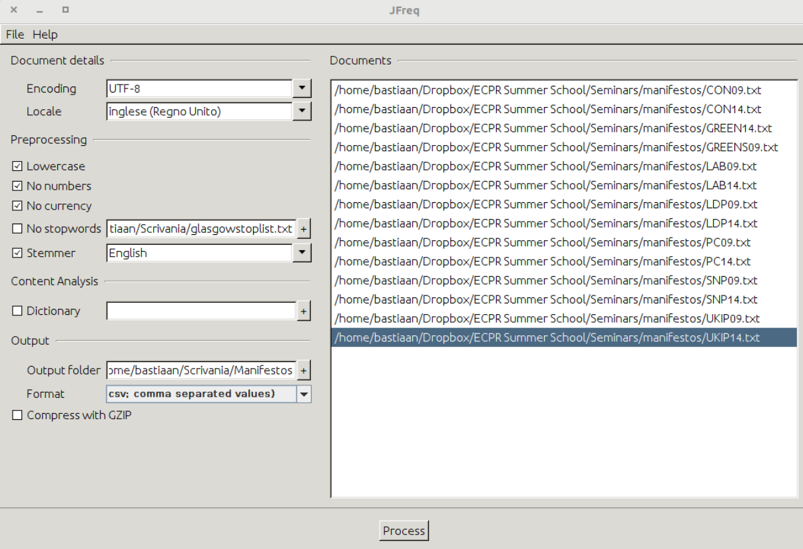

No analysis is possible unless we have some data to work with. In the following exercises, we will look at five different ways to get textual data into R: a) by using .pdf files, b) by using .txt files, c) by using .csv files, d) by using web scraping, and e) by using an API. Before we get to these methods, we will look at how R handles text and how we can work with it.
R sees any form of text as a type of characters vector. In their simplest form, these vectors only have a single character in it. At their most complicated, they can contain many sentences or even whole stories. To see how many characters a vector has, we can use the nchar function:
vector1 <- "This is the first of our character vectors"
nchar(vector1)## [1] 42length(vector1)## [1] 1This example also shows the logic of R. First, we assign the text we have to a certain object. We do so using the <- arrow. This arrow points from the text we have to the object R stores it in, which we here call vector1. We then ask R to give us the number of characters inside this object, 40 in this case. The length command returns something else, namely 1. This means that we have a single sentence, or word, in our object. If we want to, we can place more sentences inside our object using the c() option:
vector2 <- c("This is an example", "This is another", "And so we can go on.")
length(vector2)## [1] 3nchar(vector2)## [1] 18 15 20sum(nchar(vector2))## [1] 53Another thing we can do is extract certain words from a sentence. For this, we use the substr() function. With this function, R gives us all the characters that occur between two specific positions. So, when we want the characters between the 4th and 10th characters, we write:
vector3 <- "This is yet another sentence"
substr(vector3, 4, 10)## [1] "s is ye"We can also split a character vector into smaller parts. We often do this when we want to split a longer text into several sentences. To do so, we use the strsplit function:
vector3 <- "Here is a sentence - And a second"
parts1 <- strsplit(vector3, "-")
parts1## [[1]]
## [1] "Here is a sentence " " And a second"If we now look in the Environment window, we will see that R calls parts1 a list. This is another type of object that R uses to store information. We will see it more often later on. For now, it is good to remember that lists in R can have many vectors (the layers of the list) and that in each of these vectors we can store many objects. Here, our list has only a single vector. To create a longer list, we have to add more vectors, and then join them together, again using the c() command:
vector4 <- "Here is another sentence - And one more"
parts2 <- strsplit(vector4, "-")
parts3 <- c(parts1, parts2)We can now look at this new list in the Environment and check that it indeed has two elements. A further thing we can do is to join many vectors together. For this, we can use the paste function. Here, the sep argument defines how R will combine the elements:
fruits <- paste("oranges", "lemons", "pears", sep = "-")
fruits## [1] "oranges-lemons-pears"Note that we can also use this command that paste objects that we made earlier together. For example:
sentences <- paste(vector3, vector4, sep = ".")
sentences## [1] "Here is a sentence - And a second.Here is another sentence - And one more"Finally, we can change the case of the sentence. To do this, we can use tolower and toupper:
tolower(sentences)## [1] "here is a sentence - and a second.here is another sentence - and one more"toupper(sentences)## [1] "HERE IS A SENTENCE - AND A SECOND.HERE IS ANOTHER SENTENCE - AND ONE MORE"Again, we can also run the same command when we have more than a single element in our vector:
sentences2 <- c("This is a piece of example text", "This is another piece of example text")
toupper(sentences2)## [1] "THIS IS A PIECE OF EXAMPLE TEXT"
## [2] "THIS IS ANOTHER PIECE OF EXAMPLE TEXT"tolower(sentences2)## [1] "this is a piece of example text"
## [2] "this is another piece of example text"And that is it. As you can see, the options for text analysis in basic R are rather limited. This is why packages such as quanteda exist in the first place. Note though, that even quanteda uses the same logic of character vectors and combinations that we saw here.
One of the most popular formats for digital texts is the portable document format (.pdf). To read .pdf files into R, we need two packages. The pdftools package to convert the .pdf files into .txt files, and the readtext package to read the .txt files into R. Note that this only works if the .pdf files are readable. This means that we can select (and copy-paste) the text in them. Thus, readtext does not work with .pdf files that the text in them cannot be selected (this is most likely because the pages of the document were scanned as images before turned into a .pdf file). If we have a .pdf file of this type, one solution is to use the tesseract package, which can use optical character recognition technology (OCR) to fix this issue.
To import the .pdf files, we start by loading the required libraries into R:
library(pdftools)
library(readtext)Then, we go to our working directory (to see where this is, type getwd() into the Console). Here, we make two folders: one in which to store the .pdf files - called PDF - and another new and empty folder in which to store the .txt files. We call this one Texts. Ensure that all the .pdf files are in the PDF folder. Then, we tell R about these folders:
setwd("Your Working Directory")
pdf_directory <- paste0(getwd(), "/PDF")
txt_directory <- paste0(getwd(), "/Texts")Then, we ask R for a list of all the files in the .pdf directory. This is both to ensure that we are not overlooking anything and to tell R which files are in the folder. Here, setting recurse=FALSE means that we only list the files in the main folder and not any files that are in other folders in this main folder.
files <- list.files(pdf_directory, pattern = ".pdf", recursive = FALSE,
full.names = TRUE)
filesWhile we could convert a single document at a time, more often we have to deal with more than one document. To read all documents in at once, we have to write a little function. This function does the following. First, we tell R to make a new function that we label extract, and as input give it an element we call filename. This filename is at this point an empty element, but to which we will later refer the files we want to extract. Then, we tell it to print the file name to ensure that we are working with the right files while the function is running. In the next step, we tell it to try to read this filename using the pdf_text function and save the result as a file called text. Afterwards, we tell it to do so for each of the files that end on .pdf that are in the element files. Then, we have it write this text file to a new file. This file is the extracted .pdf in .txt form:
extract <- function(filename) {
print(filename)
try({
text <- pdf_text(filename)
})
title <- gsub("(.*)/([^/]*).pdf", "\\2", filename)
write(text, file.path(txt_directory, paste0(title, ".txt")))
}We then use this function to extract all the pdf files in the pdf_directory folder. To do so, we use a for loop. The logic of this loop is that for each individual file in the element files, we run the extract function we created. This will create an element called file for the file R is currently working on, and will create the .txt files in the txt_directory:
for (file in files) {
extract(file)
}We can now read the .txt files into R. To do so, we use paste0(txt_directory, "*") to tell readtext to look into our txt_directory, and read any file in there. Besides this, we need to specify the encoding. Most often, this is UTF-8, though sometimes you might find latin1 or Windows-1252 encodings. While readtext will convert all these to UTF-8, you have to specify the original encoding. To find out which one you need, you have to look into the properties of the .txt file.
Assuming our texts are in UTF-8 encoding, we run:
data_texts <- readtext(paste0(txt_directory, "*"), encoding = "UTF-8")The result of this is a data frame of texts, which we can transform into a corpus for use in quanteda or keep as it is for other types of analyses.
In case that we already have the .txt files somewhere, we can make the above process a bit easier, and begin at the last step:
library(readtext)
txt_directory <- paste0(getwd(), "/Texts")
data_texts <- readtext(paste0(txt_directory, "*"), encoding = "UTF-8")We can also choose not to import the texts into R in a direct fashion, but import a .csv file with word counts instead. One way to generate these counts is by using JFreq (Lowe 2011). This is a useful stand-alone programme written in Java that generates a .csv file where the rows represent the documents and the columns represent the individual words contained in the documents. The cells therefore, contain the wordcounts for each word within each document. JFreq also allows performing some basic pre-processing. JFreq is not actively maintained, but is available at https://conjugateprior.org/software/jfreq/.
To use JFreq, open the programme and drag and drop all the documents you want to process into the window of the programme. Once you do this, the document file names will appear in the document window. Then, you can choose from several pre-processing options. Amongst these are options to make all words lowercase or remove numbers, currency symbols, or stop words. The latter are words that often appear in texts which do not carry an important meaning. These are words such as and'',or’’ and ``but’’. As stop words are language-specific and often context-specific as well, we need to tell JFreq what words are stop words. We can do so by putting all the stop words in a separate .txt file and load it in JFreq. You can also find many lists of stopwords for different languages online. For instance, many different lists of stopwords in English are available in this GitHub page: https://github.com/igorbrigadir/stopwords Finally, we can apply a stemmer which reduces words such as Europe and European to a single Europ* stem. JFreq allows us to use pre-defined stemmers by choosing the relevant language from a drop-down menu. In the following screenshot, you can see the JFreq at work importing the .txt files of a number of election manifestos.

Note that here the encoding is UTF-8 while the locale is English (UK). Once we have specified all the options we want, we give a name for the output folder and press Process. Now we go to that folder we named and copy-paste the ``data.csv’’ file into your Working Directory. In R, we then run the following:
data_manifestos <- read.csv("data.csv", row.names = 1, header = TRUE)By specifying row.names=1, we store the information of the first column in the data frame itself. This column, containing the names of the documents now belongs to the object of the data frame and does not appear as a separate column. The same is true for header=TRUE which ensures that the first row gives names to the columns (in this case containing the words).
If our text is online (e.g. as part of a website) we can also choose to get it from there without copying it into a .txt file first. To do so, we have to employ web scraping. The logic of web scraping is that we use the structure of the underlying HTML document to find and download the text we want. Note though that not all websites encourage (or even allow) scraping. So, do have a look at their disclaimer before we do so. You can do this by either checking the website’s terms and condition page, or the robots.txt file that you can usually find appended at the home page (e.g. https://www.facebook.com/robots.txt ).
In the following example we will see how one can download information from the Internet Movie Database (IMDb): https://www.imdb.com Note that the IMDb does not allow you to do any web scraping, so the following example is given for illustration purposes only! If you are interested in analyzing data from IMDB you can download the official datasets that are released by IMDB here: https://datasets.imdbws.com/ The documentation for these datasets is available here: https://www.imdb.com/interfaces/ If you would like to learn more about web scraping in the context of quantitative text analysis we suggest the textbook by Munzert et al. (2014).
In the following example we show how to download the user reviews that appear on the IMDB website. The first command, read_html downloads this whole page. If you look at this page in your browser, you see that there are many other things on there besides the user review. To tell R which part is the text to download, we use the html_nodes command. This command looks for a certain header on the HTML page and starts downloading from there. The html_text command then reads that bit of text and puts it into the object. Note that the %>% command we use here is what we call a pipe. What it does is that it transports the output of one command into another, without saving it to an intermediate object. So here, we first download the HTML, find the right header, and only then save it into an object. Having done this for three reviews, we then bind them together:
library(rvest)
review1 <- read_html("http://www.imdb.com/title/tt1979376/") %>%
html_nodes("#titleUserReviewsTeaser p") %>%
html_text()
review2 <- read_html("http://www.imdb.com/title/tt6806448/") %>%
html_nodes("#titleUserReviewsTeaser p") %>%
html_text()
review3 <- read_html("http://www.imdb.com/title/tt7131622/") %>%
html_nodes("#titleUserReviewsTeaser p") %>%
html_text()
reviews_scraping <- c(review1, review2, review3)Instead of importing the online data page-by-page, we can also use special programmes to download lots of data at once. We can do so with an Application Programming Interface (API). The main difference between using an API and regular webscraping is that APIs are specifically designed for this purpose. This means that it is easier for R to read the webpages, and that you can download a large amount of data at once. APIs are offered by many popular web sites like Wikipedia, social networking sites like Twitter and Facebook, newspapers such as The New York Times, and so on.
While almost all websites can be read by the rvest package, for the APIs you often need a specific package. For example, for Twitter there is the rtweet package, for Facebook rFacebook, and ggmap for Google maps. Also, you often, if not always, need to register first before you can use an API. Note, however, that Facebook has recently taken steps in restricting access to their public APIs for research purposes, which means that research on Facebook users’ posts is no longer an option (see Freelon (2018) and Perriam, Birkbak, and Freeman (2020)).
Having said this, however, there are many APIs with associated R packages that are made by researchers and for researchers. One such example in the area of quantitative text analysis is the API and manifestoR package developed by the Manifesto Project, a longstanding research project previously known as the Manifesto Research Group (MRG), Comparative Manifestos Project (CMP), and Manifesto Research on Political Representation (MARPOR).
The Manifesto Project collects the electoral manifestos that have been released by major parties across the OECD countries since 1945, and trains human coders to classify their content using a custom-made coding scheme (Volkens et al. 2019). Using the Manifesto Project API we can download the text of many of these manifestos along with the annotations made by the trained coders (see Merz, Regel, and Lewandowski (2016)). In the following example we do this using the manifestoR package.
Before you can use the API, you first need to register with the Manifesto Project. For this, go to their website (https://manifesto-project.wzb.eu/), click on the Login/Sign-up button, and choose Register. As soon as you then have confirmed your account using the confirmation e-mail, you can then login to your account and go to your profile page. Here you can see your API key, which you can download. Do so, and save the file in your Working Directory. If you have forgotten where that is, type getwd() into the console and R will tell you. To load the manifestos into R we then first have to load the package and set the API key:
library(manifestoR)
mp_setapikey("manifesto_apikey.txt")R is now set to use the API for whatever we want. For example, let’s download the manifesto (and the corresponding codes) for the FDP in Germany, which has the code 41420 in the Manifesto Project, for the electing in September 2017:
corpus_fdp <- mp_corpus(party == 41420 & date == 201709)As you can see, the corpus_fdp object now contains all the relevant information.
So, what do we do when there is no R package available? In that case, we can still get the data into R, but it involves slightly more work. Let’s look at an example using an API from the Police in the United Kingdom (https://data.police.uk/docs/). If you look at the website, you find that we can get information ranging from street-level crimes to stop-and-searches. If you click any of the links, you can also see what kind of information we will be receiving and what kind of information we need to provide. Let’s start by loading the packages:
library(tidyverse)
library(httr)
library(jsonlite)Let’s see if we can get an overview of all the crimes on a street-level. When on the main page we select Street level crimes we find that we have to set the API to https://data.police.uk/api/crimes-street/all-crime?. Let’s store this address in an object so its easier to work with later:
path <- "https://data.police.uk/api/crimes-street/all-crime?"We can then build our request. As you can see on the site, the request requires us to specify the latitude and longitude of the place we are interested in and optionally the date. We set these here:
request <- GET(url = path,
query = list(
lat = 51.523772,
lng = -0.158539)
)We can then send our request. Here, we do this with the content command, which takes as its input the request we just set up, as well as the way we want our data (in text form) and the encoding (here UTF-8):
response <- content(request, as = "text", encoding = "UTF-8")The result is a JSON object that you can see in the environment. While JSON (JavaScript Object Notation) is a generic way in which information is easy to share - and is thus often used - it is not in an ideal form. So, we change the JSON information to a data frame using the following:
data_crimes <- fromJSON(response, flatten = TRUE) %>%
data.frame()You can now find all the information in the new data_crimes object, which contains information about the type of crime, location, month etc. This is one example of an API, but there are many others available, such as those of the EU, OpenStreetMaps, Weather Underground, etc. As we can see though, having a package makes things easier, though more limited.